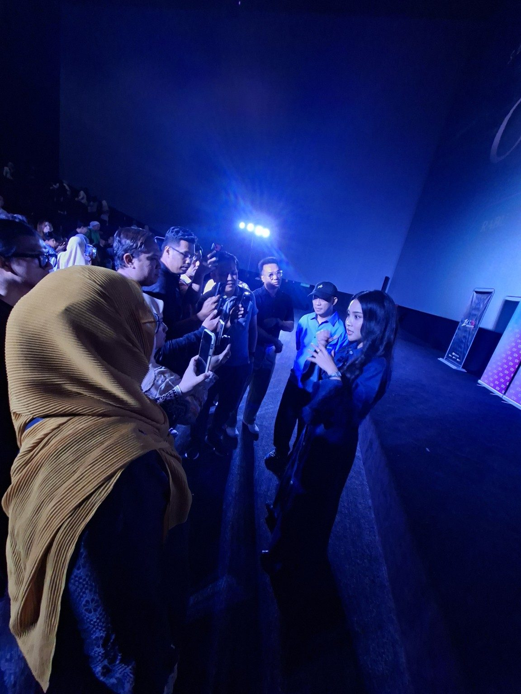
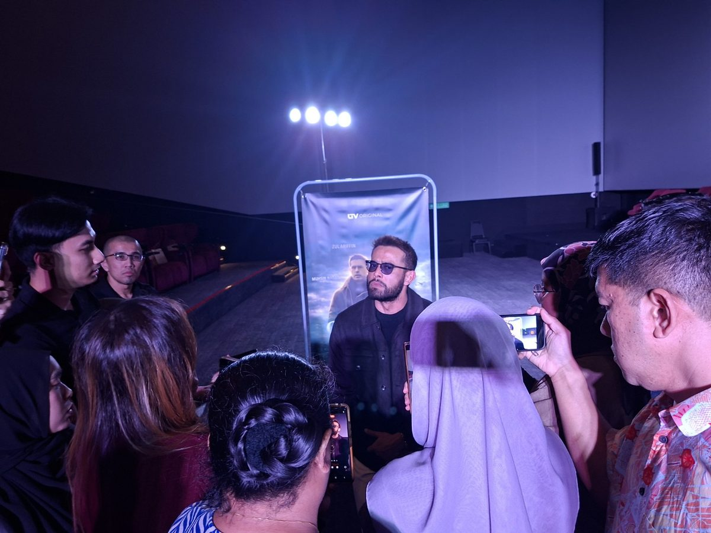
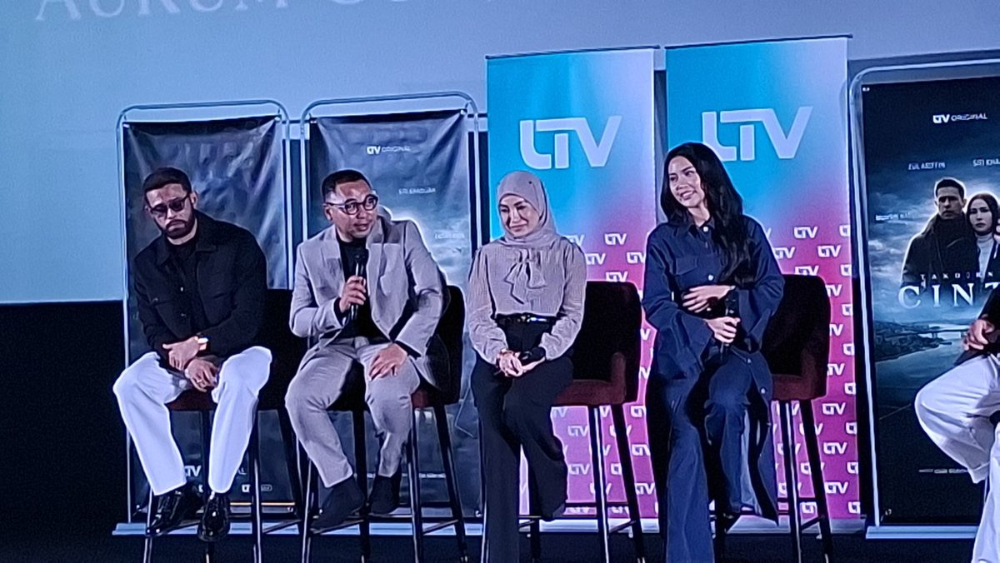

Ada majlis yang kita hadir sekadar untuk melihat kemeriahan sebuah acara. Tetapi ada juga majlis yang membuatkan kita pulang dengan sesuatu untuk difikirkan.
Bagi saya, sambutan ulang tahun pertama UTV pada 9 September 2026 adalah antara acara yang meninggalkan kesan tersebut.
Bukan semata-mata kerana suasana majlis yang meriah atau kehadiran barisan selebriti, tetapi kerana UTV pada kesempatan ini turut mengetengahkan Takdirnya Cinta, sebuah karya yang membawa bersama nama-nama besar dan wajah-wajah baharu dalam dunia hiburan tempatan.
Ada sesuatu yang menarik pada tajuk Takdirnya Cinta.
Dua perkataan yang mudah, tetapi mempunyai makna yang sangat luas.
Cinta dan takdir.
Kita boleh memilih untuk mencintai seseorang, tetapi kita tidak semestinya boleh menentukan bagaimana sebuah hubungan itu berakhir.
Kadangkala seseorang hadir dalam hidup kita secara tidak dirancang. Kadangkala pula orang yang kita fikir akan kekal bersama akhirnya menjadi sebahagian daripada kenangan.
Sebab itu, bagi saya, tajuk Takdirnya Cinta mempunyai ruang untuk membawa penonton melihat cinta bukan hanya sebagai kisah romantik, tetapi sebagai perjalanan emosi manusia.

Antara perkara yang paling menarik perhatian saya tentunya barisan pelakon yang diketengahkan.
Zul Ariffin dan Siti Khadijah menjadi antara nama yang mencuri perhatian sebagai pasangan utama karya ini.
Zul Ariffin bukan nama asing dalam industri hiburan tempatan. Sementara Siti Khadijah pula membawa daya tarikannya tersendiri sebagai pelakon generasi yang semakin mendapat perhatian.
Bagi saya, gandingan dua pelakon bukan hanya tentang rupa atau populariti.
Yang lebih penting ialah keserasian watak dan emosi.
Apabila dua pelakon mampu membuat penonton percaya bahawa mereka benar-benar hidup dalam dunia cerita tersebut, di situlah kekuatan sesebuah drama mula terasa.
Menariknya, Takdirnya Cinta turut menghimpunkan barisan pelakon lain yang memberikan warna kepada karya ini.
Antaranya ialah Fattah Amin, Muhsin Nadzli dan Marissa Yasmin.
Bagi saya, kehadiran barisan pelakon seperti ini menjadikan karya tersebut lebih menarik untuk diikuti.
Setiap pelakon membawa pengalaman, karakter dan cara lakonan yang berbeza.
Dan saya percaya kekuatan sesebuah karya bukan hanya bergantung kepada watak utama. Kadangkala watak sampinganlah yang akhirnya menjadi watak yang paling diingati penonton.

Di sebalik sesebuah karya yang sampai kepada penonton, kita sering melihat wajah pelakon di hadapan kamera.
Tetapi jarang kita fikir tentang mereka yang berada di belakang pembikinannya.
Datuk Nana Hasan merupakan antara nama penting di sebalik karya ini sebagai penerbit.
Bagi saya, menghasilkan sesuatu karya memerlukan keberanian.
Bukan hanya keberanian untuk menghasilkan cerita, tetapi keberanian untuk mempertaruhkan masa, tenaga, wang dan reputasi bagi memastikan sesuatu idea dapat diterjemahkan kepada sebuah karya yang boleh dinikmati penonton.
Ini bahagian yang paling saya suka tentang pengalaman pertama saya membuat review hiburan.
Saya tidak mahu menulis seolah-olah saya sudah mengetahui segala-galanya tentang karya ini.
Sebaliknya, saya mahu berkongsi apa yang saya lihat sendiri.
Saya melihat suasana sebuah majlis yang menghimpunkan dunia media, hiburan dan kandungan digital.
Saya melihat barisan pelakon yang menjadi tumpuan.
Saya melihat keterujaan di sebalik penghasilan sebuah karya.
Dan saya melihat sebuah platform yang sedang berusaha membina identitinya sendiri.
Saya tidak mahu memberikan jawapan terlalu awal.
Kerana pada akhirnya, penontonlah yang mempunyai hak untuk menentukan.
Bagi saya, sebuah karya tidak boleh dinilai hanya kerana pelakonnya popular atau majlis pelancarannya meriah.
Ia mesti dinilai melalui cerita, emosi, lakonan dan yang paling penting — kesan yang ditinggalkan selepas kita selesai menontonnya.
Kalau selepas menonton seseorang masih terfikir tentang watak, konflik dan jalan ceritanya, itu bermakna karya tersebut sudah berjaya melakukan sesuatu kepada penonton.
Dan saya berharap Takdirnya Cinta mampu memberikan pengalaman seperti itu.
Ini merupakan antara pengalaman pertama saya menulis review khusus untuk dunia hiburan bagi Nanis.Com.
Saya mengakui ia sesuatu yang berbeza daripada penulisan berita atau artikel yang biasa saya hasilkan.
Tetapi saya menyukainya.
Kerana review memberikan ruang untuk saya melihat sesuatu bukan hanya melalui fakta, tetapi melalui pandangan, pemerhatian dan pengalaman sendiri.
Dan mungkin ini adalah permulaan.
Selepas ini, mungkin akan ada lebih banyak karya yang saya tonton. Lebih banyak majlis yang saya hadiri. Lebih ramai artis yang saya temui. Dan tentunya lebih banyak cerita yang akan saya kongsikan bersama pembaca Nanis.Com.
Takdirnya Cinta hadir bersama satu persoalan yang cukup sederhana tetapi dekat dengan kehidupan kita semua:
Mungkin setiap penonton akan mempunyai jawapan yang berbeza.
Dan mungkin itulah keindahan sebuah karya — ia memberikan ruang kepada kita untuk membuat penilaian sendiri.
Bagi UTV pula, saya melihat Takdirnya Cinta sebagai satu lagi langkah dalam perjalanan mereka membina kandungan dan mendekati penonton.
Untuk saya?
Ini baru permulaan kepada perjalanan Nanis.Com dalam dunia review hiburan.
Kita jumpa lagi di karya yang seterusnya.